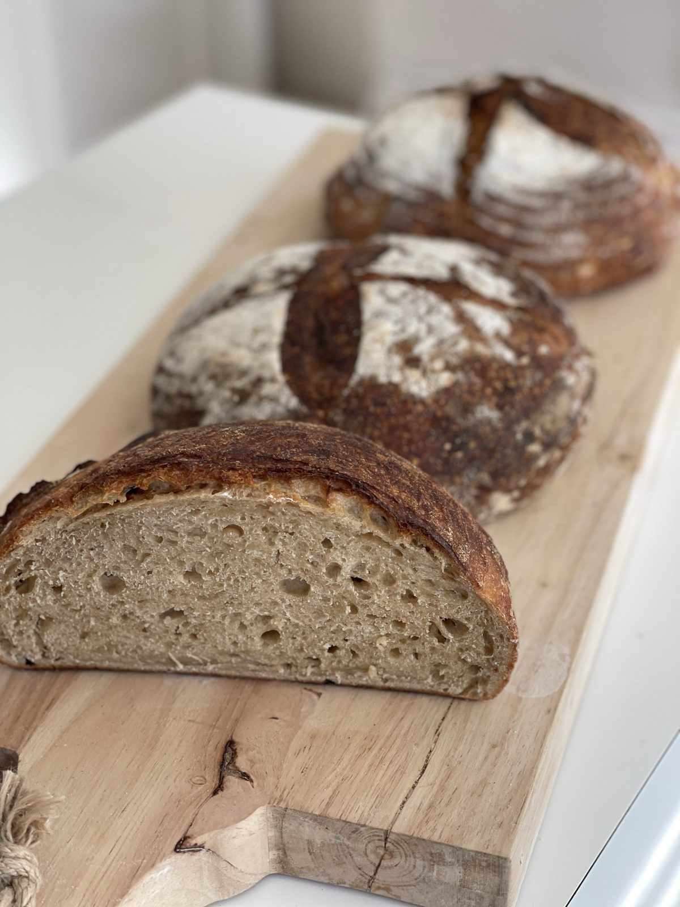
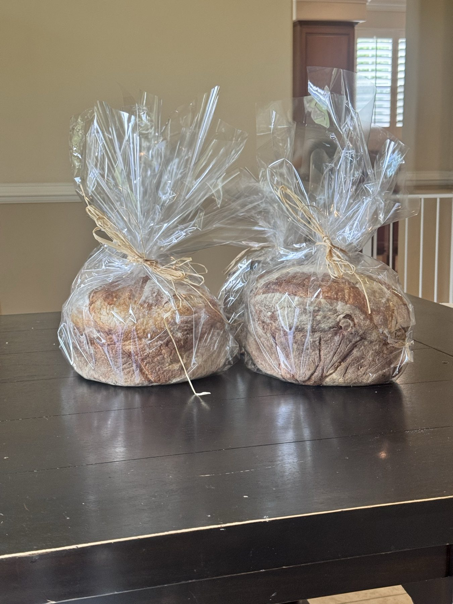

The Blessing
Why we bake. Why we call it Communion. And what comes with every loaf, beyond the loaf itself.
A stranger on a road, with bread.
Long before Israel had a king. Before the Law was given on Sinai. Before there was a priesthood, or a temple, or a tabernacle in the wilderness — a man named Melchizedek met Abraham on a road and brought out bread and wine.
He was a priest. He was a king. He worshipped the God Most High. And the meal he laid out — bread, wine, a blessing — is the first blessing meal in Scripture.
"Then Melchizedek, king of Salem, brought out bread and wine. He was priest of God Most High, and he blessed Abram."
Scripture spends two verses on him and then moves on. But the Spirit doesn't forget. A thousand years later, the psalmist sings of a coming priest — "in the order of Melchizedek." A thousand years after that, the letter to the Hebrews finishes the sentence: this priest is Christ.
And the meal Melchizedek laid out on the road — bread and wine, given and blessed — turns out to be the meal Christ would lay out in an upper room. The meal the Church has been laying out ever since.
The bread keeps showing up.
Once you've seen Melchizedek, you start seeing it everywhere.
You see it at Passover, when a flat loaf carries an entire people out of slavery. You see it in the wilderness, when bread falls from the sky every morning for forty years. You see it when a prophet under siege is commanded to bake bread from wheat, barley, beans, lentils, millet, and spelt. You see it on a hillside, when five barley loaves feed five thousand and somehow still leave twelve baskets behind.
You see it at a table on a Thursday night, when a man takes bread, blesses it, breaks it, and says four words the Church has never gotten over: this is my body.
You see it the next Sunday afternoon, when two friends on a road to Emmaus walk for miles with a stranger and don't recognize him until he breaks the bread.
And then you see it on every table in every kitchen everywhere, every day — bread, broken by hand, passed around. The pattern doesn't stop.
"Take wheat and barley, beans and lentils, millet and spelt; put them in a storage jar and use them to make bread for yourself."

Because the table comes before the sermon.
Soren grew up watching his grandmother bake on Saturdays so the house had bread for Sunday. The smell was theology before he had words for it.
Years later, when he found his own faith, he found that bread is on almost every page of it. From Melchizedek to the prophet’s multi-grain loaf to manna to the multiplied loaves to the upper room to a stranger on the road to Emmaus, bread keeps showing up — and a blessing follows.
This is why we bake. Not because bread is sacred in itself, but because the One who took bread, gave thanks, and broke it, made it the sign He chose. Every loaf is a small remembrance of a much bigger meal.
"Bread shows up first. Words follow."
A blessing, by hand.
Every loaf goes out with a small card, handwritten on the morning of your pickup. A line of Scripture on one side. A short blessing for the table on the other.
Different week to week. Some weeks the Aaronic blessing from Numbers. Some weeks the line from Psalm 23. Some weeks a fragment of the Eucharistic prayer, or a grace at table, or just "the bread which we break."
Set the loaf on your table. Tear it by hand. Pass it around. Read the card aloud, or set it under the basket and let it do its quiet work.

"Thou preparest a table before me.
Thou anointest my head with oil.
My cup runneth over."
Psalm 23 · For a Saturday table
A sample card. Yours will be different.
For whoever sits down.
If you read these pages as Christian sacrament — they are.
If you read them as the ancient practice of hospitality, older than any one tradition — they are also.
If you read them as just dinner — that's where every blessing has always started anyway. Bread on a table. Hands that didn't make it. A reason, however small, to say thank you before the first bite.
The bread is for your table, whatever you bring to it. The blessing is given. The bread is yours.
"Take, eat."
— Matthew 26:26
Reserve a loaf for your table.
Country Levain is what's baking now. The blessing card goes out with every loaf.
Reserve a Loaf